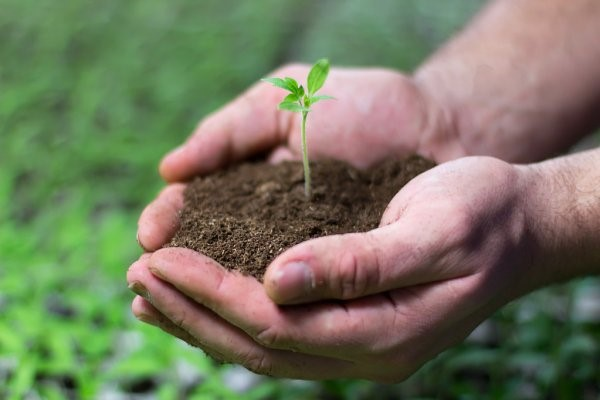

Agricultura Familiar
Agricultura familiar: o que você sabe sobre esse assunto?
O que você entende sobre agricultura familiar? Neste artigo você encontrará informações incríveis sobre esse assunto, como o conceito; sua importância, além de conhecer os grandes desafios enfrentados pelos agricultores. Venha comigo!
| De acordo com a Lei nº 11.326 de julho de 2006, um agricultor familiar é caracterizado por realizar atividades rurais envolvendo economia e não deixando de possuir alguns requisitos, estes são: |
|---|
| Ter uma área de, no máximo, quatro módulos fiscais; |
| Usar a mão-de-obra da própria família na maior parte das atividades; |
| Ter um percentual mínimo de renda originada de suas próprias atividades; |
| Ter as atividades gerenciadas pela própria família. | Essa lei tem o fim de realizar o básico para que haja a mão de fortalecimento da agricultura familiar uma estrutura agrícola familiar e sustentável, ditando etapas e processos para que seja mantido um bom funcionamento desse setor em constante crescimento. |
CONCEITO DE AGRICULTURA FAMILIAR
Essa prática consiste na produção de alimentos tradicionais e uma grande variedade de produtos situação que a difere da agricultura industrial. Hoje com milhões de hectares de plantações, o Brasil é o maior produtor de soja do mundo e um dos maiores quando levamos em consideração os grãos.
A agricultura familiar está associada as formas de cultivo da terra e produção rural, onde a mão de obra é majoritariamente proveniente do núcleo familiar.
Uma das características da agricultura familiar é a produção a partir de pequenos agricultores, com maior diversidade produtiva, onde normalmente a família tem o papel de proprietária, gestora e ainda é responsável por toda a logística de produção e comercialização.
De acordo com dados da ONU – Organizações das Nações Unidas, a agricultura familiar é responsável por 80% de toda a produção mundial de alimentos. A ONU também informou que são mais de 500 milhões de produtores rurais dedicados à agricultura familiar no mundo, o que representa mais de 90% de todas as propriedades agrícolas.
A IMPORTÂNCIA DA AGRICULTURA FAMILIAR
Essa prática tem grande relevância para a produção de alimentos, tanto no que se refere à quantidade quanto no relativo à variedade e base para a sustentação das famílias brasileiras. De quebra, ainda tem importante papel na geração de empregos, especialmente na zona rural, e na renda e estruturação familiar.
Quando a relacionamos ao censo agropecuário, a agricultura realizada pelas famílias é um grande fornecedor de matéria-prima, por exemplo, de leite para laticínios, hortifrúti para supermercados e fábricas de sucos entre outros. Com isso muitas das vezes oferecendo produtos de qualidade igual ou melhores que os estabelecimentos agropecuários específicos.
O importante é entender que esse trabalho em menor escala atende a nichos mais específicos, especialmente produtos fabricados e manufaturados na própria unidade rural.
Segundo a FAO, a família e o campo representam uma unidade que evolui de forma contínua e desempenha funções econômicas, ambientais, sociais e culturais na economia rural mais ampla e nas redes territoriais em que estão integradas.
BENEFÍCIOS DA AGRICULTURA FAMILIAR
Empregos e fonte de renda
Agricultura familiar é caracterizada por pequenas propriedades, dessa maneira, o número de beneficiados com os resultados financeiros também é um diferencial, o que possibilita a geração de renda familiar em regiões distantes de centros industrializados, oferecendo alternativa, inclusive, para fixação do homem no campo. Além disso, por ela não utilizar uma grande quantidade de maquinários e de químicos, a demanda de mão-de-obra no campo é maior, gerando mais empregos.
Faz uso sustentável dos recursos naturais
A agricultura familiar beneficia o campo ambiental, por adotar práticas ambientais mais sustentáveis em função da produção em pequena escala. O que permite a adoção de sistemas produtivos muito mais eficientes que se utilizam de menos energia fóssil e muito mais energia renovável. Além disso, esse estilo de produção respeita a harmonia ambiental e as espécies, aproveita as sinergias naturais, utilizam modos de produção orgânica e agroecológica, que conferem aos produtos da agricultura familiar diferencial competitivo na busca por qualidade e responsabilidade socioambiental.
Diminuição do êxodo rural
O êxodo rural, que se intensificou nas décadas de 1980 e 1990, vem diminuindo devido à qualidade de vida no campo e a possibilidade de produzir com qualidade e em alta quantidade. Essa característica contribui para a dieta básica da família brasileira, além de terem empresas focadas em desenvolver soluções para agricultores pequenos, médios e grandes.
Obtenção de políticas públicas
A União, bem como os estados e municípios, oferece diferentes vantagens para quem atua com a agricultura familiar. Entre as possibilidades estão programas de crédito, seguros de produção, aquisição de terras, incentivo à comercialização e custeio de safras. Uma das principais iniciativas é o Programa Nacional de Fortalecimento da Agricultura Familiar (Pronaf). Ainda existe a Política Nacional de Assistência Técnica Rural (ATER), que forma agentes para prestar serviços e capacitar os agricultores.
Certificação dos produtos
As instituições privadas, muitas vezes, oferecem certificações e selos que comprovam a qualidade, a padronização e a origem dos produtos. Esse reconhecimento incentiva a venda e se torna um benefício comercial para os produtores.
DESAFIOS DA AGRICULTURA FAMILIAR
Abrangência
Esses quesitos ainda precisam ser aperfeiçoados, já que são pequenos. Uma forma de alcançar esse objetivo é a capacitação dos produtores com o intuito de indicar como aumentar a produtividade e obter melhores resultados.
Cooperação entre agricultores
Esse aspecto é um trabalho feito, especialmente, pelas cooperativas. Por isso, elas devem focar as atividades mais a favor do agricultor, em vez de mirar o faturamento e a lucratividade.
Qualificação dos agricultores com a tecnologia
O conhecimento, o estudo e a familiaridade dos produtores com a tecnologia é indispensável. Essa é uma forma de aumentar a produtividade, desde que haja capacitação para trabalhar com as máquinas. Isso também impacta a administração da propriedade, já que existem muitos sistemas com essa finalidade e que facilitam todo o processo.
SUSTENTABILIDADE E AGRICULTURA FAMILIAR
Visto priorizar práticas tradicionais de cultivo e de baixo impacto ambiental, a agricultura familiar tem sido grande aliada da sustentabilidade e da responsabilidade socioambiental. A agricultura sustentável é um conceito usado para definir a relação entre as práticas da agricultura e as de sustentabilidade. Dessa forma, a atividade econômica da agricultura permite respeitar o meio ambiente, ao mesmo tempo, em que garante sua viabilidade financeira, obtendo maior equilíbrio entre ambas as partes.
Subsistência familiar
Plantar para o próprio desenvolvimento econômico é a principal característica da agricultura de subsistência. A agricultura de subsistência no Brasil é um importante instrumento para diminuição da miséria. No entanto, a baixa produtividade dos mini-latifúndios abre debates acerca da necessidade de modernizar esse modelo de produção rural com fins comerciais, passando para o plantio de alta produtividade. Apesar dos benefícios deste modelo agrícola, ainda existem algumas dificuldades. Não é sempre que os pequenos produtores, por exemplo, têm condições de mecanizar o cultivo. Além disso, a baixa renda, o pouco ou quase nenhum crédito e, muitas vezes, o baixíssimo índice de educação são alguns dos impeditivos. Por outro lado, é por meio desse modelo econômico que milhares de famílias sobrevivem em todas as regiões do país, com uma ênfase especial para o norte e o nordeste. Além disso, não só no Brasil, mas em todo o globo, a agricultura de subsistência exerce grande importância na economia familiar.
Cultivo para a venda
Ao contrário da ideia simplista que associa a agricultura familiar à produção de subsistência, hoje ela é responsável por 80% de toda a produção mundial de alimentos, de acordo com os dados da Organização das Nações Unidas (ONU). Ela também informa que há cerca de 500 milhões de produtores rurais aplicados a esse modelo no mundo, ocupando 90% de todas as propriedades agrícolas do globo. Os dados referentes à agricultura familiar no Brasil só reforçam a importância de o sistema ser reconhecido no âmbito global. Com mais de 4 milhões de estabelecimentos familiares em território nacional, ela responde, hoje, por 38% do Produto Interno Bruto Agropecuário do País, o equivalente a um montante de 54 bilhões de reais é o que aponta o Embrapa. A importância da agricultura familiar no contexto da produção rural do país não é menor. Ela responde pelo emprego de mais de 4 milhões de trabalhadores rurais, o que corresponde a 74% da mão de obra empregada no campo. E é a principal fonte de alimentos do país segundo dados divulgados pelo Governo Federal.

Fale conosco
Telefone
(011) 3256-6589
(11) 998745-5625
portaldocampo@pdc.org.br